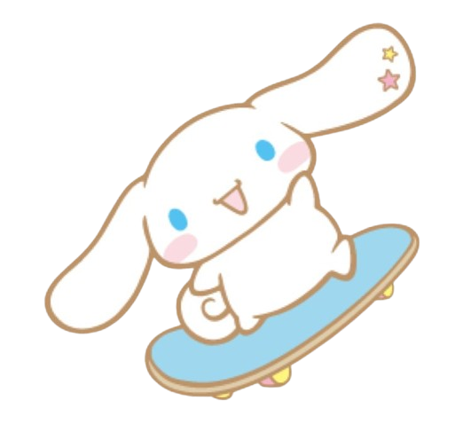

Sobre mim
Desde os 6 anos, descobri minha paixão por tecnologia e robótica. O fascínio por entender como as coisas funcionam e
criar soluções com as próprias mãos me levou a explorar esse universo desde muito cedo. Comecei fazendo cursos de programação de jogos 2D e 3D,
o que despertou ainda mais minha curiosidade e criatividade. Também me aprofundei em cursos de robótica, onde pude unir teoria e prática, e estudei
C# utilizando o Visual Studio, desenvolvendo projetos que me desafiaram e me motivaram a continuar. Hoje, continuo estudando e me atualizando constantemente,
pois a tecnologia não é apenas um interesse é a minha paixão e o que me inspira todos os dias.
